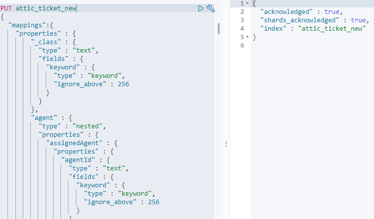
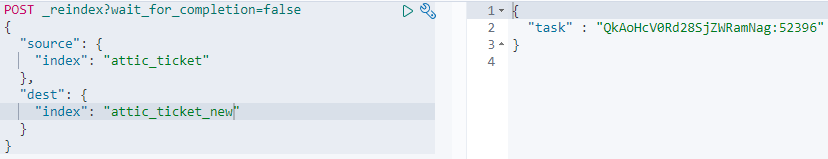
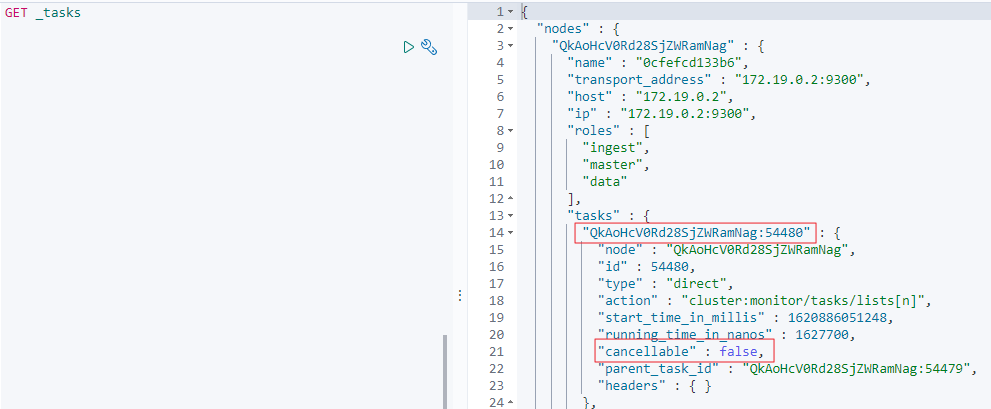
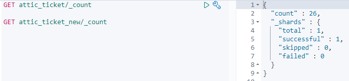
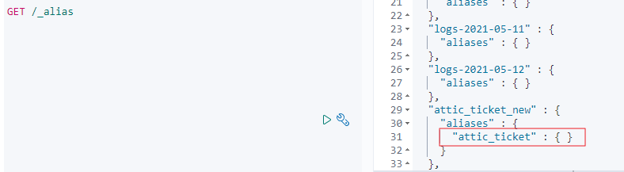
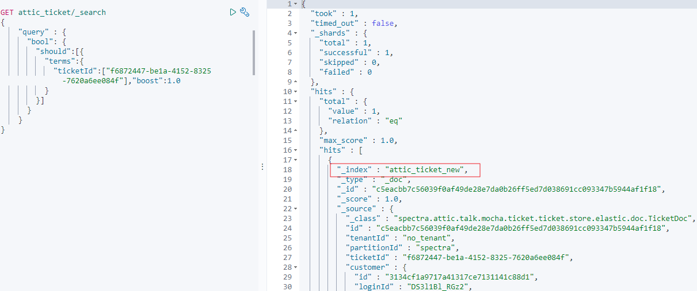

elasticsearch 필드 추가(2)
[공통]
기존 데이터 백업을 진행합니다.
스냅샷 백업 방식은 “여기” 참고하세요.
[Alias를 활용하는 방식]
1. 현재 적용된 맵핑 정보를 조회한다.
GET attic_ticket/_mapping
2. 위에서 조회한 맵핑 정보를 복사해서, 새로운 필드을 추가하고 새로운 맵핑정보를 가진 인덱스를 생성한다.
PUT attic_ticket_new // attic_ticket_new 인덱스를 생성
{
"mappings":{
"properties" : {
"_class" : {
"type" : "text",
"fields" : {
"keyword" : {
"type" : "keyword",
"ignore_above" : 256
}
}
},
"customer" : {
"type" : "nested",
"properties" : {
"messengerId" : { // messengerId 필드 추가
"type" : "text",
"fields" : {
"keyword" : {
"type" : "keyword",
"ignore_above" : 256
}
}
},
......(중략).......
}
}
}

3. 잘 추가되었는지 확인한다
GET attic_ticket_new/_mapping
4. 새로 생성한 인덱스로 기존 데이터 복사
POST _reindex?wait_for_completion=false // false로 하면 비동기로 실행하겠다는 뜻
{
"source": {
"index": "attic_ticket" // 원본 인덱스
},
"dest": {
"index": "attic_ticket_new" // 필드 추가해서 새로 생성한 인덱스
}
}

- _reindex api는 _source가 enable일때만 가능하다(_search하면 enable인지 확인가능)
- _reindex는 mapping정보는 복사하지 않고 데이터만 복사하기 때문에 새로운 index쪽에 따로 mapping정보를 맞춰줘야 하는 것.
4-1. 데이터 양이 많은 경우, 여러번 나눠서 수행한다.
POST _reindex?wait_for_completion=false
{
"source": {
"index": "attic_ticket"
"size" : 999 // 나눠서 수행할 크기를 지정한다.
},
"dest": {
"index": "attic_ticket_new"
}
}
4-2. 원본이 원격지에 있는 경우, 원본 데이터 중 일부만 대상으로 하는 경우
POST _reindex?wait_for_completion=false
{
"source": {
"remote": { // 원본데이터가 있는 원격지 정보
"host": "https://remotehost:9200",
"username": "user",
"password": "pass"
},
"index": "attic_ticket", // 원본 인덱스
"query": { // 일부 데이터만 복사할 경우 조건 쿼리를 추가한다.
"match": {
"field_name": "field_value"
}
}
},
"dest": {
"index": "attic_ticket_new" // 필드 추가해서 새로 생성한 인덱스
}
}
4-3. 비동기 수행 후, 수행 결과 조회
GET _tasks

- task번호로 조회한다.
- cancellable이 true이면, 수행 중 취소가 가능하다.
5. 원본데이터와 복사데이터 count를 비교해본다.
GET attic_ticket/_count
GET attic_ticket_new/_count

6. 새로 추가한 인덱스에 기존 인덱스의 alias로 교체해야한다.
6-1. attic_ticket에 alias를 추가한다. (삭제되게 되지만, alias를 교체해야하므로 원본에 alias가 있어야한다.)
POST /_aliases
{
"actions" : [
{ "add" : { "index" : "attic_ticket", "alias" : "attic_ticket_alias" } }
]
}
6-2. 새로 추가한 인덱스에 기존 원본 alias로 교체해준다. (alias add를 먼저 실행하면 동일한 alias를 가진 색인이 2개가 되므로 (거의) 동일한 검색결과가 2건씩 나오게 된다. 반대로 기존 alias를 먼저 지우면 클라이언트에서 검색 요청이 들어왔을 때 해당 alias내지 인덱스가 없으므로 오류가 발생하기 때문에 add와 remove를 동시에 진행)
POST /_aliases
{
"actions" : [
{
"add": {
"index": "attic_ticket_new",
"alias": "attic_ticket"
},
"remove" : {
"index" : "attic_ticket",
"alias" : "attic_ticket_alias"
}
}
]
}
6-3. 새로운 인덱스에 alias가 잘 맵핑되어있는지 확인한다.
GET /_alias

7. 검증
7-1. 새로운 티켓을 인입 또는 종료시켜본다.
7-2. 새로운 인덱스로 검색해본다.
GET attic_ticket/_search // 교체한 alias명으로 검색
{
"query" : {
"bool": {
"should":[{
"terms":{
"ticketId":["f6872447-be1a-4152-8325-7620a6ee084f"],"boost":1.0
}
}]
}
}
}

- 검색 결과의 _index가 새로 생성한 인덱스명인지 확인
참고
https://www.elastic.co/kr/blog/changing-mapping-with-zero-downtime